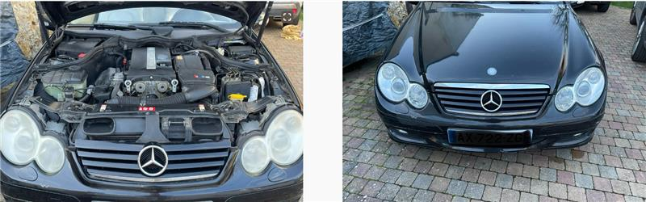
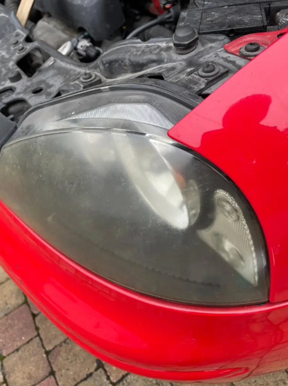
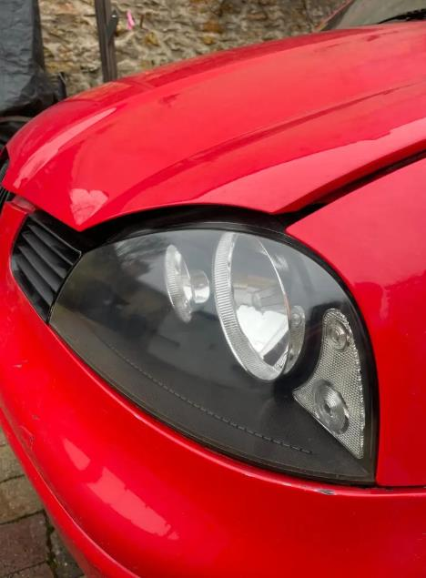
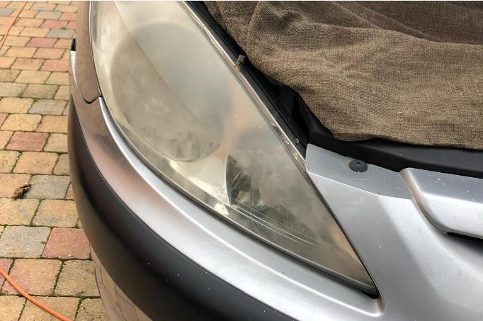
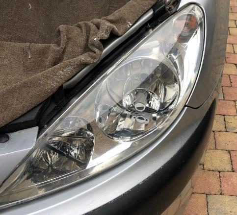
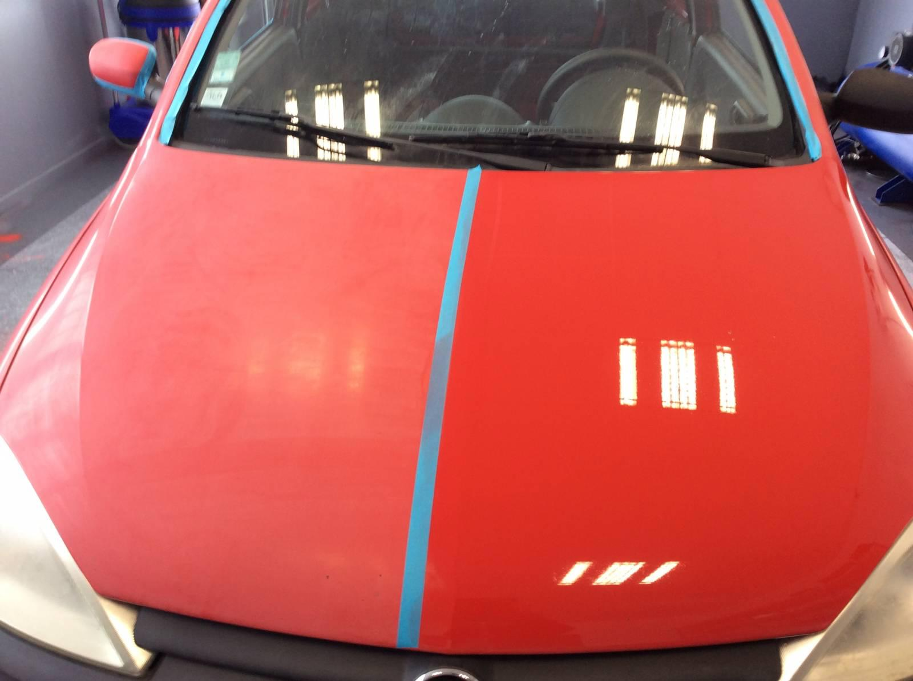
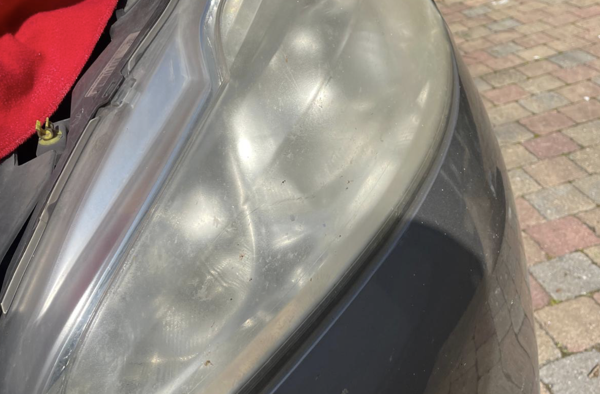
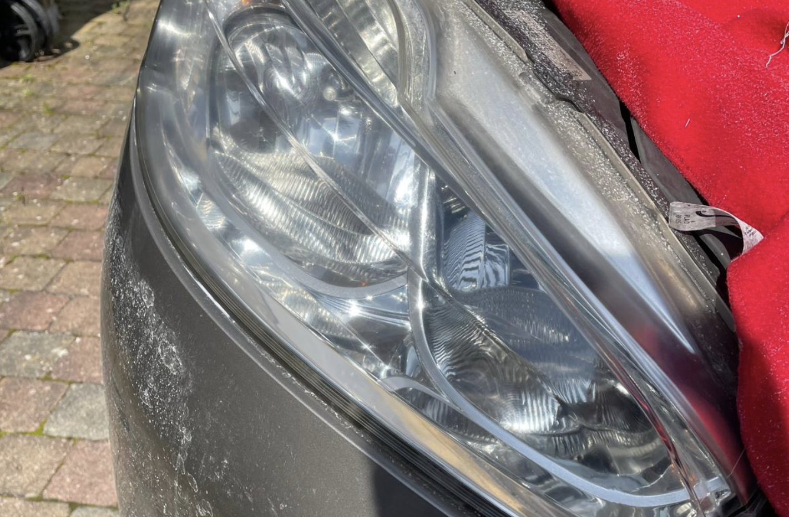

Découvrez nos Photos
Bienvenue dans notre galerie photos, le reflet de notre passion et de notre savoir-faire en matière de restauration de phares et de lustrage de carrosserie. Chaque image que vous voyez ici témoigne de notre engagement à transformer et sublimer l'apparence de chaque véhicule qui passe entre nos mains.
Nous espérons que ces images vous donneront une idée claire de la qualité de nos services et de l'impact transformateur que nous apportons à chaque véhicule. Prenez votre temps pour parcourir notre galerie et découvrez comment nous pouvons aider votre voiture à retrouver tout son éclat et sa beauté.
Galerie avant/après








Votre véhicule mérite le même traitement.
Contactez-nous pour obtenir un devis gratuit et sans engagement.
Demander un devis gratuit